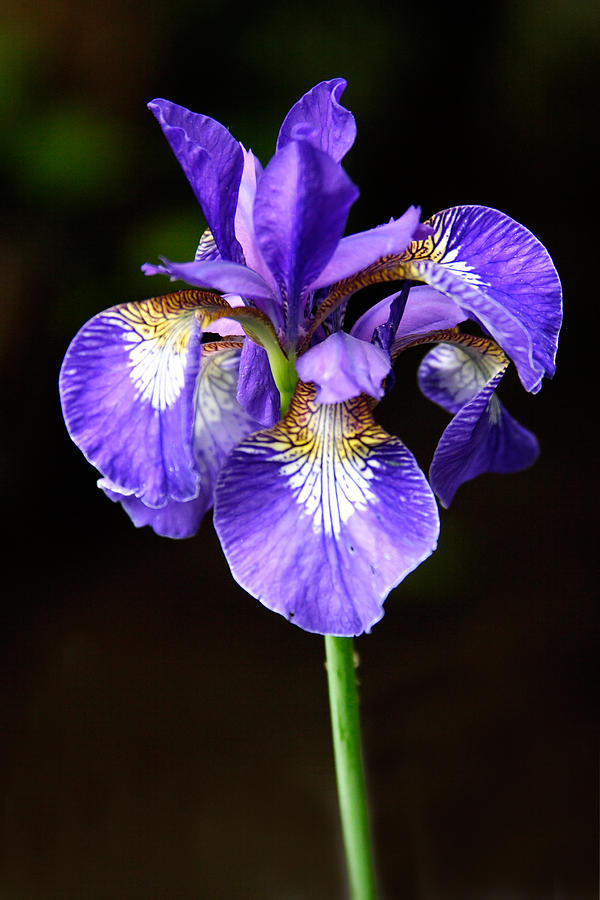

Delta Phi Epsilon was founded in 1917 at New York University
Law School by five brave women. There are 105 active chapters
across the nation and two of which are in Canada. Their Motto
is
Esse Quam Videri; to be rather than to seem to be. Their flower
is the purple iris. The philanthropies that they represent are
National Association of Anorexia Nervosa and Associated Disorders
and the Cystic Fibrosis Foundation. The are currently over
67,000 members of the sorority.
Click here to learn more at the offical DPHIE website
| Date Started |
University in Georgia |
| 2000 |
Kennesaw State University |
| 2015 |
University of North Georgia |
| 2012 |
Georgia Southern |
| 2017 |
Emory University |
| 2015 |
University of Georgia |
| 2016 |
Young Harris College |
Everyday, the sisters strive to live by the motto, Esse Quam Videri,
which means to be rather than to seem to be. This motto means to live
your life as a genuine woman and always be as transparent as possible. It urges
members to not live under a facade and to actually live by their words and to
always be accepting and caring towards others. The purpose of this sorority is
to accept women of all backgrounds, and Delta Phi Epsilon was the first non-sectarian
social sorority.
The sorority's flower is the purple iris, symbolizing royality, faith, wisdom, valor, and hope.
The unicorn became the offical mascot in 1981.
Also, the sisterhood badge is a equilateral triangle in gold surrounded
by 21 pearls, the jewelry of the sorority. The sorority's colors are
royal purple and pure gold.
